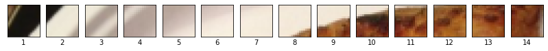
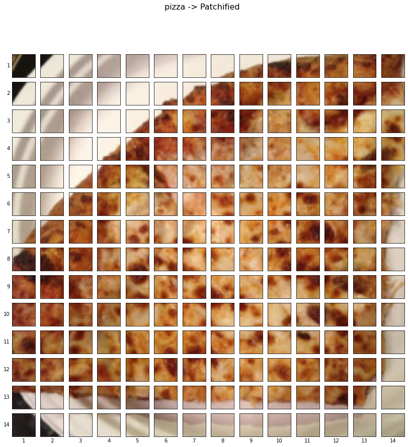
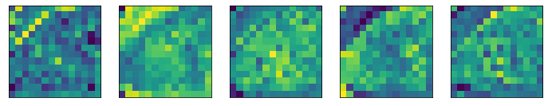

Want to recreate ViT paper: “An Image is Worth 16x16 Words: Transformers for Image Recognition at Scale” - https://arxiv.org/abs/2010.11929 - TK will refer to this as “ViT paper” throughout.
TK what is ViT?
TK - The name Transformer comes from the architecture name in the paper where it was originally introduced, Attention is all you need. An architecture is usually considered a Transformer variant if it uses attention layers in a specific pattern. Since the Transformer architecture originally focused on text data, the goal of the ViT paper was to bring it to the vision.
TK - The original transformer was made to work on sequences of text (1D), Vision Transformer turns images into sequences of “patches”.
TK - original ViT also called “vanilla vision transformer”
10.1 TK - What is paper replicating?
It’s no secret machine learning is advancing fast.
Many of these advances get published in machine learning research papers.
And the goal of paper replicating is to take replicate these advances with code so you can use the techniques for your own problem.
For example, let’s say a new model architecture gets released that performs better than any other architecture before on various benchmarks, wouldn’t it be nice to try that architecture on your own problems?
TK image: paper replicating = research paper (language + diagrams + math) -> code (turn language, diagrams and math into usable code) / (translate a research paper into usable code)
10.2 TK - What is a machine learning research paper?
A machine learning research paper is a scientific paper that details findings of a research group on a specific area.
The contents of a machine learning research paper can vary from paper to paper but they generally follow the structure:
Section
Contents
Abstract
An overview/summary of the paper’s main findings/contributions.
Introduction
What’s the paper’s main problem and what are previous methods used to try and solve it?
Method
How did the researchers go about conducting their research? For example, what model(s) were used, data sources, training setups, etc.
Results
What are the outcomes of the paper? If a new type of model or training setup was used, how did the results of findings compare to previous works (this is where experiment tracking comes in handy)?
Conclusion
What are the limitations of the suggested methods? What are some next steps for the research community?
References
What resources/other papers did the researchers look at to build their own body of work?
Appendix
Are there any extra resources/findings to look at that weren’t included in any of the above sections?
10.3 TK - Why replicate a machine learning research paper?
A machine learning research paper is often a presentation of months of work and experiments done by some of the best machine learning teams in the world condensed into a few pages of text.
And if these experiments lead to better results in an area related to the problem you’re working on, it’d be nice to try them out.
Also, replicating the work of others is a fantastic way to practice your skills.
George Hotz is founder of comma.ai, a self-driving car company and livestreams machine learning coding on Twitch and those videos get posted in full to YouTube. I pulled this quote from one of his livestreams. The “٭” is to note that machine learning engineering often involves the extra step(s) of preprocessing data and making your models available for others to use (deployment).
When you first start trying to replicate research papers, you’ll likely be overwhelmed.
That’s normal.
Research teams spend weeks, months and sometimes years creating these works so it makes sense if it takes you sometime to even read let alone reproduce the works.
Replicating research is such a tough problem, phenomenal machine learning libraries and tools such as, HuggingFace, PyTorch Image Models (timm library) and fast.ai have been born out of making machine learning research more accessible.
10.4 TK - Where can you find code examples for machine learning research papers?
One of the first things you’ll notice when it comes to machine learning research is: there’s a lot of it.
So beware, trying to stay on top of it is like trying to outrun a hamster wheel.
Follow your interest, pick a few things that stand out to you.
In saying this, there are several places to find and read machine learning research papers: * arXiv - Pronounced “archive”, arXiv is a free and open resource for reading technical articles on everything from physics to computer science (inlcuding machine learning). * Papers with Code - A curated collection of trending, active and greatest machine learning papers, many of which include code resources attached. Also includes a collection of common machine learning datasets, benchmarks and current state-of-the-art models. * AK Twitter - The AK Twitter account publishes machine learning research highlights, often with live demos almost every day. I don’t understand 9/10 posts but I find it fun to explore every so often. * lucidrains’ vit-pytorch GitHub repository - Less of a place to find research papers and more of an example of what paper replicating with code on a larger-scale looks like. The vit-pytorch repository is a collection of Vision Transformer model architectures from various research papers replicated with PyTorch code (much of the inspiration for this notebook was gathered from this repository).
TK image: showcase the above
10.5 TK - 이번 장에서 다룰 내용
TODO
ViT -> FoodVision Mini
Layers = collections of functions to manipulate data -> Architectures = collections of layers (blocks) -> All layers (and blocks) have inputs and outputs
Replicating research papers starts by figuring out the inputs and outputs of your layers -> blocks -> model
As we’ve done previously, let’s make sure we’ve got all of the modules we’ll need for this section.
We’ll import the Python scripts (such as data_setup.py and engine.py) we created in 05. PyTorch Going Modular.
To do so, we’ll download going_modular directory from the pytorch-deep-learning repository (if we don’t already have it).
We’ll also get the torchinfo package if it’s not available.
torchinfo will help later on to give us a visual representation of our model.
And since later on we’ll be using a newer version of the torchvision package (as of June 2022), we’ll make sure we’ve got the latest versions.
# For this notebook to run with updated APIs, we need torch 1.12+ and torchvision 0.13+try:import torchimport torchvisionassertint(torch.__version__.split(".")[1]) >=12, "torch version should be 1.12+"assertint(torchvision.__version__.split(".")[1]) >=13, "torchvision version should be 0.13+"print(f"torch version: {torch.__version__}")print(f"torchvision version: {torchvision.__version__}")except:print(f"[INFO] torch/torchvision versions not as required, installing nightly versions.")!pip3 install -U --pre torch torchvision torchaudio --extra-index-url https://download.pytorch.org/whl/nightly/cu113import torchimport torchvisionprint(f"torch version: {torch.__version__}")print(f"torchvision version: {torchvision.__version__}")
참고: If you’re using Google Colab, you may have to restart your runtime after running the above cell. After restarting, you can run the cell again and verify you’ve got the right versions of torch and torchvision.
Now we’ll continue with the regular imports, setting up device agnostic code and this time we’ll also get the helper_functions.py script from GitHub.
참고: It may be a better idea for many of the functions in the helper_functions.py script to be merged into going_modular/going_modular/utils.py, perhaps that’s an extension you’d like to try.
# Continue with regular importsimport matplotlib.pyplot as pltimport torchimport torchvisionfrom torch import nnfrom torchvision import transforms# Try to get torchinfo, install it if it doesn't worktry:from torchinfo import summaryexcept:print("[INFO] Couldn't find torchinfo... installing it.")!pip install -q torchinfofrom torchinfo import summary# Try to import the going_modular directory, download it from GitHub if it doesn't worktry:from going_modular.going_modular import data_setup, enginefrom helper_functions import download_data, set_seeds, plot_loss_curvesexcept:# Get the going_modular scriptsprint("[INFO] Couldn't find going_modular or helper_functions scripts... downloading them from GitHub.")!git clone https://github.com/mrdbourke/pytorch-deep-learning!mv pytorch-deep-learning/going_modular .!mv pytorch-deep-learning/helper_functions.py . # get the helper_functions.py script!rm -rf pytorch-deep-learningfrom going_modular.going_modular import data_setup, enginefrom helper_functions import download_data, set_seeds, plot_loss_curves
참고: If you’re using Google Colab, and you don’t have a GPU turned on yet, it’s now time to turn one on via Runtime -> Change runtime type -> Hardware accelerator -> GPU.
Beautiful! Data downloaded, let’s setup the training and test directories.
# Setup directory paths to train and test imagestrain_dir = image_path /"train"test_dir = image_path /"test"
10.9 TK 2. Create Datasets and DataLoaders
Since we’ve got some data, let’s now turn it into DataLoader’s.
To do so we can use the create_dataloaders() function in data_setup.py.
First, we’ll create a transform to prepare our images.
This where one of the first references to the ViT paper will come in.
In Table 3, the training resolution is mentioned as being 224 (height=224, width=224).
You can often find various hyperparameter settings listed in a table. In this case we’re still preparing our data, so we’re mainly concerned with things like image size and batch size. Source: Table 3 in ViT paper.
So we’ll make sure our transform resizes our images appropriately.
And since we’ll be training our model from scratch (no transfer learning to begin with), we won’t provide a normalize transform like we did in 06. PyTorch Transfer Learning section 2.1.
10.9.1 2.1 Prepare transforms for images
# Create image size (from Table 3 in the ViT paper) IMG_SIZE =224# Create transform pipeline manuallymanual_transforms = transforms.Compose([ transforms.Resize((IMG_SIZE, IMG_SIZE)), transforms.ToTensor(),]) print(f"Manually created transforms: {manual_transforms}")
The ViT paper states the use of a batch size of 4096 which is 128x the size of the batch size we’ve been using (32).
We’re going to stick with a batch size of 32.
Why?
Because some hardware (including the free tier of Google Colab) may not be able to handle a batch size of 4096.
Having a batch size of 4096 means that 4096 images need to fit into the GPU memory at a time.
This works when you’ve got the hardware to handle it like a research team from Google often does but when you’re running on a single GPU (such as using Google Colab), making sure things work with smaller batch size first is a good idea.
An extension of this project could be to try a higher batch size value and see what happens.
참고: We’re using the pin_memory=True parameter in the create_dataloaders() function to speed up computation. pin_memory=True avoids unnecessary copying of memory between the CPU and GPU memory by “pinning” examples that have been seen before. For more on this concept. Though the benefits of this will likely be seen with larger dataset sizes (our FoodVision Mini dataset is quite small). See the PyTorch torch.utils.data.DataLoader documentation or Making Deep Learning Go Brrrr from First Principles by Horace He for more.
# Set the batch sizeBATCH_SIZE =32# this is lower than the ViT paper but it's because we're starting small# Create data loaderstrain_dataloader, test_dataloader, class_names = data_setup.create_dataloaders( train_dir=train_dir, test_dir=test_dir, transform=manual_transforms, # use manually created transforms batch_size=BATCH_SIZE)train_dataloader, test_dataloader, class_names
(<torch.utils.data.dataloader.DataLoader at 0x7fa8cc731550>,
<torch.utils.data.dataloader.DataLoader at 0x7fa8cc731520>,
['pizza', 'steak', 'sushi'])
10.9.3 TK 2.3 Visualize a single image
Now we’ve loaded our data, let’s visualize, visualize, visualize!
An important step in the ViT paper is preparing the images into patches.
We’ll get to what this means in a second but for now, let’s view a single image and its label.
To do so, let’s get a single image and label from a batch of data and inspect their shapes.
# Get a batch of imagesimage_batch, label_batch =next(iter(train_dataloader))# Get a single image from the batchimage, label = image_batch[0], label_batch[0]# View the batch shapesimage.shape, label
(torch.Size([3, 224, 224]), tensor(0))
Wonderful!
Now let’s plot the image and its label with matplotlib.
Looks like our images are importing correctly, let’s continue with the paper replication.
10.10 TK 3. Replicating the ViT paper: an overview
Before we write anymore code, let’s discuss what we’re doing.
We’d like to replicate the ViT paper for our own problem, FoodVision Mini.
So our inputs are: images of pizza, steak and sushi.
And our ideal model outputs are: predicted labels of pizza, steak or sushi.
No different to what we’ve been doing throughout the previous sections.
The question is: how do we go from our inputs to the desired outputs?
10.10.1 3.1 Inputs and outputs, layers and blocks
ViT is a deep learning neural network architecture.
And any neural network architecture is generally comprised of layers.
And a collection of layers is often referred to as a block.
And stacking many blocks together is what gives us the whole architecture.
A layer takes an input (say an image tensor), performs some kind of function on it (for example what’s in the layer’s forward() method) and then returns an output.
So if a single layer takes an input and gives an output, then a collection of layers or a block also takes an input and gives an output.
Let’s make this concrete: * Layer - takes an input, performs a function on it, returns an output. * Block - a collection of layers, takes an input, performs a series of functions on it, returns an output. * Architecture (or model) - a collection of blocks, takes an input, performs a series of functions on it, returns an output.
This ideology is what we’re going to be using to replicate the ViT paper.
We’re going to take it layer by layer, block by block, function by function putting the pieces of the puzzle together like Lego to get our desired overall architecture.
The reason we do this is because looking at a whole research paper can be intimidating.
So for a better understanding, we’ll break it down, starting with the inputs and outputs of single layer and working up to the inputs and outputs of the whole model.
TK image: stacking the network together like lego (functions + layers + blocks = model).
10.10.2 3.2 Getting specific: What’s ViT made of?
There are many little details about the ViT model sprinkled throughout the paper.
Finding them all is like one big treasure hunt!
Remember, a research paper is often months of work compressed into a few pages so it’s understandable for it to take of practice to replicate.
However, the main three resources we’ll be looking at for the architecture design are: 1. Figure 1 - This gives an overview of the model in a graphical sense, you could almost recreate the architecture with this figure alone. 2. Four equations in section 3.1 - These equations give a little bit more of a mathematical grounding to the coloured blocks in Figure 1. 3. Table 1 - This table shows the various hyperparameter settings (such as number of layers and number of hidden units) for different ViT model variants. We’ll be focused on the smallest version, ViT-Base.
10.10.2.1 TK 3.2.1 Exploring Figure 1
Let’s start by going through Figure 1 of the ViT Paper.
The main things we’ll be paying attention to are: 1. Layers - takes an input, performs an operation or function, produces an output. 2. Blocks - a collection of layers, which in turn also takes an input and produces an output.
Figure 1 from the ViT Paper showcasing the different inputs, outputs, layers and blocks that create the architecture. Our goal will be to replicate each of these using PyTorch code.
The ViT architecture is comprised of several stages: * Patch + Position Embedding (inputs) - Turns the input image into a sequence of image patches and add a position number what order the patch comes in. * Linear projection of flattened patches (Embedded Patches) - The image patches get turned into an embedding, the benefit of using an embedding rather than just the image values is that an embedding is a learnable representation (typically in the form of a vector) of the image that can improve with training. * Norm - This is short for “Layer Normalization” or “LayerNorm”, a technique for regularizing (reducing overfitting) a neural network, you can use LayerNorm via the PyTorch layer torch.nn.LayerNorm(). * Multi-Head Attention - This is a Multi-Headed Self-Attention layer or “MSA” for short. You can create an MSA layer via the PyTorch layer torch.nn.MultiheadAttention(). * MLP (or Multilayer perceptron) - A MLP can often refer to any collection of feedforward layers (or in PyTorch’s case, a collection of layers with a forward() method). In the ViT Paper, the authors refer to the MLP as “MLP block” and it contains two torch.nn.Linear() layers with a torch.nn.GELU() non-linearity activation in between them (section 3.1) and a torch.nn.Dropout() layer after each (Appendex B.1). * Transformer Encoder - The Transformer Encoder, is a collection of the layers listed above. There are two skip connections inside the Transformer encoder (the “+” symbols) meaning the layer’s inputs are fed directly to immediate layers as well as subsequent layers. The overall ViT architecture is comprised of a number of Transformer encoders stacked on top of eachother. * MLP Head - This is the output layer of the architecture, it converts the learned features of an input to a class output. Since we’re working on image classification, you could also call this the “classifier head”. The structure of the MLP Head is similar to the MLP block.
You might notice that many of the pieces of the ViT architecture can be created with existing PyTorch layers.
This is because of how PyTorch is designed, it’s one of the main purposes of PyTorch to create reusable neural network layers for both researchers and machine learning practitioners.
Question: Why not code everything from scratch?
You could definitely do that by reproducing all of the math equations from the paper with custom PyTorch layers and that would certainly be an educative exercise, however, using pre-existing PyTorch layers is usually favoured as pre-existing layers have often been extensively tested and performance checked to make sure they run correctly and fast.
참고: We’re going to focused on write PyTorch code to create these layers, for the background on what each of these layers does, I’d suggest reading the ViT Paper in full or reading the linked resources for each layer.
Let’s take Figure 1 and adapt it to our FoodVision Mini problem of classifying images of food into pizza, steak or sushi.
Figure 1 from the ViT Paper adapted for use with FoodVision Mini. An image of food goes in (pizza), the image gets turned into patches and then projected to an embedding. The embedding then travels through the various layers and blocks and (hopefully) the class “pizza” is returned.
10.10.2.2 TK - 3.2.2 Exploring the Four Equations
The next main part(s) of the ViT paper we’re going to look at are the four equations in section 3.1.
These four equations represent the math behind the four major parts of the ViT architecture.
Section 3.1 describes each of these (some of the text has been omitted for brevity, bolded text is mine):
Equation number
Description from ViT paper section 3.1
1
…The Transformer uses constant latent vector size \(D\) through all of its layers, so we flatten the patches and map to \(D\) dimensions with a trainable linear projection (Eq. 1). We refer to the output of this projection as the patch embeddings.
2
The Transformer encoder (Vaswani et al., 2017) consists of alternating layers of multiheaded selfattention (MSA, see Appendix A) and MLP blocks (Eq. 2, 3). Layernorm (LN) is applied before every block, and residual connections after every block (Wang et al., 2019; Baevski & Auli, 2019).
3
See above.
4
Similar to BERT’s [ class ] token, we prepend a learnable embedding to the sequence of embedded patches\(\left(\mathbf{z}_{0}^{0}=\mathbf{x}_{\text {class }}\right)\), whose state at the output of the Transformer encoder \(\left(\mathbf{z}_{L}^{0}\right)\) serves as the image representation \(\mathbf{y}\) (Eq. 4)…
Let’s map these descriptions to the ViT architecture in Figure 1.
Connecting Figure 1 from the ViT paper to the four equations from section 3.1 describing the math behind each of the layers/blocks. Some details such as “residual connections after every block” are referred to in Figure 1 and in the text but not in the equations.
There’s a lot happening in the image above but following the coloured lines and arrows reveals the main concepts of the ViT architecture.
How about we break down each equation further (it will be our goal to recreate these with code)?
In all equations (except equation 4), “\(\mathbf{z}\)” is the raw output of a particular layer:
\(\mathbf{z}_{0}\) is “z zero” (this is the output of the initial patch embedding layer)
\(\mathbf{z}_{\ell}^{\prime}\) is “z of a particular layer prime” (or an intermediary value of z)
\(\mathbf{z}_{\ell}\) is “z of a particular layer”
And \(\mathbf{y}\) is the overall output of the architecture.
This says that for every layer from \(1\) through to \(L\) (the total number of layers), there’s a Multi-Head Attention layer (MSA) wrapping a LayerNorm layer (LN).
The addition on the end is the equivalent of adding the input to the output and forming a skip/residual connection.
This says that for every layer from \(1\) through to \(L\) (the total number of layers), there’s also a Multilayer Perceptron layer (MLP) wrapping a LayerNorm layer (LN).
The addition on the end is showing the presence of a skip/residual connection.
This says for the last layer \(L\), the output \(y\) is the 0 index token of \(z\) wrapped in a LayerNorm layer (LN).
Or in our case, the 0 index of x_output_MLP_block:
y = LN_layer(Linear_layer(x_output_MLP_block[0]))
Of course there are some simplifications above but we’ll take care of those when we start to write PyTorch code for each section.
참고: The above section covers alot of information. But don’t forget if something doesn’t make sense, you can always research it further. By asking questions like “what is a residual connection?”.
10.10.2.3 TK - 3.2.3 Exploring Table 1
The final piece of the ViT architecture puzzle we’ll focus on (for now) is Table 1.
Model
Layers
Hidden size \(D\)
MLP size
Heads
Params
ViT-Base
12
768
3072
12
\(86M\)
ViT-Large
24
1024
4096
16
\(307M\)
ViT-Huge
32
1280
5120
16
\(632M\)
<i>Table 1: Details of Vision Transformer model variants. Source: <a href="https://arxiv.org/abs/2010.11929">ViT paper</a>.</i>
This table showcasing the various hyperparameters of each of the ViT architectures.
You can see the numbers gradually increase from ViT-Base to ViT-Huge.
We’re going to focus on replicating ViT-Base (start small and scale up when necessary) but we’ll be writing code that could easily scale up to the larger variants.
Breaking the hyperparameters down: * Layers - How many Transformer encoder blocks are there? (each of these will contain a MSA block and MLP block) * Hidden size \(D\) - This is the embedding dimension throughout the architecture, this will be the size of the vector that our image gets turned into when it gets patched and embedded. Generally, the larger the embedding dimension, the more information can be captured, the better results. However, a larger embedding comes at the cost of more compute. * MLP size - What are the number of hidden units in the MLP layers? * Heads - How many heads are there in the Multi-Head Attention layers? * Params - What are the total number of parameters of the model? Generally, more parameters leads to better performance but at the cost of more compute. You’ll notice even ViT-Base has far more parameters than any other model we’ve used so far.
We’ll use these values as the hyperparameter settings for our ViT architecture.
10.10.3 TK - 3.3 My workflow for replicating papers
When I start working on replicating a paper, I go through the following steps:
Read the whole paper end-to-end once (to get an idea of the main concepts).
Go back through each section and see how they line up with each other and start thinking about how they might be turned into code (just like above).
Repeat step 2 until I’ve got a fairly good outline.
Use mathpix.com (a very handy tool) to turn any sections of the paper into markdown/LaTeX to put into notebooks.
Replicate the simplest version of the model possible.
If I get stuck, look up other examples.
TK - gif of mathpix
We’ve already gone through the first few steps above (and if you haven’t read the full paper yet, I’d encourage you to give it a go) but what we’ll be focusing on next is step 5: replicating the simplest version fo the model possible.
This is why we’re starting with ViT-Base.
Replicating the smallest version of the architecture possible, get it working and then we can scale up if we wanted to.
참고: If you’ve never read a research paper before, many of the above steps can be intimidating. But don’t worry, like anything, your skills at reading and replicating papers will improve with practice. Don’t forget, a research paper is often months of work by many people compressed into a few pages. So trying to replicate it on your own is no small feat.
10.11 TK 4. Equation 1: Split data into patches and creating the class, position and patch embedding
I remember one of my machine learning engineer friends used to say “it’s all about the embedding.”
As in, if you can represent your data in a good, learnable way (as embeddings are learnable representations), chances are a learning algorithm will be able to perform well on them.
So with that being said, let’s start by creating the class, position and patch embeddings for the ViT architecture.
We’ll start with the patch embedding.
This means we’ll be turning our input images in a sequence of patches and then embedding those patches.
Recall that an embedding is a learnable representation of some form and is often a vector. The term learnable is important because this means the representation of an input image can be improved and learned over time.
We’ll begin by following the opening paragraph of section 3.1 of the ViT paper (bold mine):
표준 트랜스포머는 토큰 임베딩의 1D 시퀀스를 입력으로 받습니다. To handle 2D images, we reshape the image \(\mathbf{x} \in \mathbb{R}^{H \times W \times C}\) into a sequence of flattened 2D patches \(\mathbf{x}_{p} \in \mathbb{R}^{N \times\left(P^{2} \cdot C\right)}\), where \((H, W)\) is the resolution of the original image, \(C\) is the number of channels, \((P, P)\) is the resolution of each image patch, and \(N=H W / P^{2}\) is the resulting number of patches, which also serves as the effective input sequence length for the Transformer. The Transformer uses constant latent vector size \(D\) through all of its layers, so we flatten the patches and map to \(D\) dimensions with a trainable linear projection (Eq. 1). We refer to the output of this projection as the patch embeddings.
And size we’re dealing with image shapes, let’s keep in mind the line from Table 3 of the ViT paper:
Training resolution is 224.
Let’s break down the text above.
\(D\) is the size of the patch embeddings, different values for \(D\) can be found in Table 1.
The image starts as 2D with size \({H \times W \times C}\).
The image gets converted to a sequence of flattened 2D patches with size \({N \times\left(P^{2} \cdot C\right)}\).
\((H, W)\) is the resolution of the original image.
\(C\) is the number of channels.
\((P, P)\) is the resolution of each image patch (patch size).
\(N=H W / P^{2}\) is the resulting number of patches, which also serves as the effective input sequence length for the Transformer.
Mapping the patch and position embedding portion of the ViT architecture from Figure 1 to Equation 1. The opening paragraph of section 3.1 describes the different input and output shapes of the patch embedding layer.
10.11.1 TK - 4.1 Calculating patch embedding input and output shapes by hand
How about we start by calculating these input and output shape values by hand?
To do so, let’s create some variables to mimic each of the terms (such as \(H\), \(W\) etc) above.
We’ll use a patch size (\(P\)) of 16 since it’s the best performing version of ViT-Base uses (see column “ViT-B/16” of Table 5 in the ViT paper for more).
# Create example valuesheight =224# H ("The training resolution is 224.")width =224# Wcolor_channels =3# Cpatch_size =16# P# Calculate N (number of patches)number_of_patches =int((height * width) / patch_size**2)print(f"Number of patches (N) with image height (H={height}), width (W={width}) and patch size (P={patch_size}): {number_of_patches}")
Number of patches (N) with image height (H=224), width (W=224) and patch size (P=16): 196
We’ve got the number of patches, how about we create the image output size as well?
Better yet, let’s replicate the input and output shapes of the patch embedding layer.
Recall:
Input: The image starts as 2D with size \({H \times W \times C}\).
Output: The image gets converted to a sequence of flattened 2D patches with size \({N \times\left(P^{2} \cdot C\right)}\).
10.11.2 TK - 4.2 Turning a single image into patches
Now we know the ideal input and output shapes for our patch embedding layer.
What we’re doing here is breaking the overall architecture down into smaller pieces, focusing on the inputs and outputs of individual layers.
So how do we create the patch embedding layer?
We’ll get to that shortly, first, let’s visualize, visualize, visualize! what it looks like to turn an image into patches.
Let’s start with our single image.
# View single imageplt.imshow(image.permute(1, 2, 0)) # adjust for matplotlibplt.title(class_names[label])plt.axis(False);
We want to turn this image into patches of itself inline with Figure 1 of the ViT paper.
How about we start by just visualizing the top row of patched pixels?
We can do this by indexing on the different image dimensions.
# Change image shape to be compatible with matplotlib (color_channels, height, width) -> (height, width, color_channels) image_permuted = image.permute(1, 2, 0)# Index to plot the top row of patched pixelspatch_size =16plt.figure(figsize=(patch_size, patch_size))plt.imshow(image_permuted[:patch_size, :, :]);
Now we’ve got the top row, let’s turn it into patches.
We can do this by iterating through the number of patches there’d be in the top row.
# Setup hyperparameters and make sure img_size and patch_size are compatibleimg_size =224patch_size =16num_patches = img_size/patch_size assert img_size % patch_size ==0, "Image size must be divisible by patch size"print(f"Number of patches per row: {num_patches}")# Create a series of subplotsfig, axs = plt.subplots(nrows=1, ncols=img_size // patch_size, # one column for each patch figsize=(num_patches, num_patches), sharex=True, sharey=True)# Iterate through number of patches in the top rowfor i, patch inenumerate(range(0, img_size, patch_size)): axs[i].imshow(image_permuted[:patch_size, patch:patch+patch_size, :]);# keep height index constant, alter the width index axs[i].set_xlabel(i+1) # set the label axs[i].set_xticks([]) axs[i].set_yticks([])
Number of patches per row: 14.0

Those are some nice looking patches!
How about we do it for the whole image?
This time we’ll iterate through the indexs for height and width and plot each patch as it’s own subplot.
# Setup hyperparameters and make sure img_size and patch_size are compatibleimg_size =224patch_size =16num_patches = img_size/patch_size assert img_size % patch_size ==0, "Image size must be divisible by patch size"print(f"Number of patches per row: {num_patches}\nNumber of patches per column: {num_patches}\nTotal patches: {num_patches*num_patches}")# Create a series of subplotsfig, axs = plt.subplots(nrows=img_size // patch_size, # need int not float ncols=img_size // patch_size, figsize=(num_patches, num_patches), sharex=True, sharey=True)# Loop through height and width of imagefor i, patch_height inenumerate(range(0, img_size, patch_size)): # iterate through heightfor j, patch_width inenumerate(range(0, img_size, patch_size)): # iterate through width# Plot the permuted image patch (image_permuted -> (Height, Width, Color Channels)) axs[i, j].imshow(image_permuted[patch_height:patch_height+patch_size, # iterate through height patch_width:patch_width+patch_size, # iterate through width :]) # get all color channels# Set up label information, remove the ticks for clarity and set labels to outside axs[i, j].set_ylabel(i+1, rotation="horizontal", horizontalalignment="right", verticalalignment="center") axs[i, j].set_xlabel(j+1) axs[i, j].set_xticks([]) axs[i, j].set_yticks([]) axs[i, j].label_outer()# Set a super titlefig.suptitle(f"{class_names[label]} -> Patchified", fontsize=16)plt.show()
Number of patches per row: 14.0
Number of patches per column: 14.0
Total patches: 196.0

Image patchified!
Woah, that looks cool.
Now how do we turn each of these patches into an embedding and convert them into a sequence?
Hint: we can use PyTorch layers. Can you guess which?
10.11.3 TK - 4.3 Creating image patches with torch.nn.Conv2d()
It’s time to start moving towards replicating the patch embedding layers with PyTorch.
To visualize our single image we wrote code to loop through the different height and width dimensions of a single image and plot individual patches.
In fact, the authors of the ViT paper mention in section 3.1 that the patch embedding is achievable with a convolutional neural network (CNN):
Hybrid Architecture. As an alternative to raw image patches, the input sequence can be formed from feature maps of a CNN (LeCun et al., 1989). In this hybrid model, the patch embedding projection \(\mathbf{E}\) (Eq. 1) is applied to patches extracted from a CNN feature map. As a special case, the patches can have spatial size \(1 \times 1\), which means that the input sequence is obtained by simply flattening the spatial dimensions of the feature map and projecting to the Transformer dimension. The classification input embedding and position embeddings are added as described above.
The “feature map” they’re refering to are the weights/activations produced by a convolutional layer passing over a given image.
By setting the kernel_size and stride parameters of a torch.nn.Conv2d() layer equal to the patch_size, we can effectively get a layer that splits our image into patches and creates a learnable embedding (referred to as a “Linear Projection” in the ViT paper) of each patch.
Remember our ideal input and output shapes for the patch embedding layer?
Input: The image starts as 2D with size \({H \times W \times C}\).
Output: The image gets converted to a sequence of flattened 2D patches with size \({N \times\left(P^{2} \cdot C\right)}\).
Or for an image size of 224 and patch size of 16:
Input (2D image): (224, 224, 3)
Output (flattened 2D patches): (196, 768)
We can recreate these with: * torch.nn.Conv2d() for turning our image into patches of CNN feature maps. * torch.nn.Flatten() for flattening the spatial dimensions of the feature map.
Let’s start with the torch.nn.Conv2d() layer.
We can replicate the creation of patches by setting the kernel_size and stride equal to patch_size.
This means each convolutional kernel will be of size (patch_size x patch_size) or if patch_size=16, (16 x 16) (the equivalent of one whole patch)
And each step or stride of the convolutional kernel will be patch_size pixels long or 16 pixels long (equivalent of stepping to the next patch).
We’ll set in_channels=3 for the number of color channels in our image and we’ll set out_channels=768, the same as the \(D\) value in Table 1 for ViT-Base (this is the embedding dimension, each image will be embedded into a vector of size 768).
from torch import nn# Set the patch sizepatch_size=16# Create the Conv2d layer with hyperparameters from the ViT paperconv2d = nn.Conv2d(in_channels=3, # number of color channels out_channels=768, # from Table 1: Hidden size D, this is the embedding size kernel_size=patch_size, # could also use (patch_size, patch_size) stride=patch_size, padding=0)
Now we’ve got a convoluational layer, let’s see what happens when we pass a single image through it.
# View single imageplt.imshow(image.permute(1, 2, 0)) # adjust for matplotlibplt.title(class_names[label])plt.axis(False);
# Pass the image through the convolutional layer image_out_of_conv = conv2d(image.unsqueeze(0)) # add a single batch dimension (height, width, color_channels) -> (batch, height, width, color_channels)print(image_out_of_conv.shape)
torch.Size([1, 768, 14, 14])
Passing our image through the convolutional layer turns it into a series of 768 (this is the embedding size or \(D\)) feature/activation maps.
Let’s visualize five random feature maps and see what they look like.
# Plot random 5 convolutional feature mapsimport randomrandom_indexes = random.sample(range(0, 758), k=5) # pick 5 numbers between 0 and the embedding sizeprint(f"Showing random convolutional feature maps from indexes: {random_indexes}")# Create plotfig, axs = plt.subplots(nrows=1, ncols=5, figsize=(12, 12))# Plot random image feature mapsfor i, idx inenumerate(random_indexes): image_conv_feature_map = image_out_of_conv[:, idx, :, :] # index on the output tensor of the convolutional layer axs[i].imshow(image_conv_feature_map.squeeze().detach().numpy()) axs[i].set(xticklabels=[], yticklabels=[], xticks=[], yticks=[]);
Showing random convolutional feature maps from indexes: [180, 39, 286, 72, 105]

Notice how the feature maps all kind of represent the original image, visualizing a few you can see the different major outlines and some major features.
The important thing to note is that these features may change over time as the neural network learns.
And because of these, these feature maps can be considered a learnable embedding of our image.
Let’s check one out in numerical form.
# Get a single feature map in tensor formsingle_feature_map = image_out_of_conv[:, 0, :, :]single_feature_map, single_feature_map.requires_grad
The grad_fn output of the single_feature_map and the required_grad=True attribute means PyTorch is tracking the gradients of this feature map and it will be updated by gradient descent during training.
10.11.4 TK - 4.4 Flattening the patch embedding with torch.nn.Flatten()
We’ve turned our image into patch embeddings but they’re still in 2D format.
How do we get them into the desired output shape of the patch embedding layer of the ViT model?
Well we’ve got the 768 part ( \((P^{2} \cdot C)\) ) but we still need the number of patches (\(N\)).
Reading back through section 3.1 of the ViT paper it says (bold mine):
As a special case, the patches can have spatial size \(1 \times 1\), which means that the input sequence is obtained by simply flattening the spatial dimensions of the feature map and projecting to the Transformer dimension.
Flattening the spatial dimensions of the feature map hey?
What layer do we have in PyTorch that can flatten?
We’ll: 1. Take a single image. 2. Put in through the convolutional layer (conv2d) to turn the image into 2D feature maps (patch embeddings). 3. Flatten the 2D feature map into a single sequence.
# 1. View single imageplt.imshow(image.permute(1, 2, 0)) # adjust for matplotlibplt.title(class_names[label])plt.axis(False);print(f"Original image shape: {image.shape}")# 2. Turn image into feature mapsimage_out_of_conv = conv2d(image.unsqueeze(0)) # add batch dimension to avoid shape errorsprint(f"Image feature map shape: {image_out_of_conv.shape}")# 3. Flatten the feature mapsimage_out_of_conv_flattened = flatten(image_out_of_conv)print(f"Flattened image feature map shape: {image_out_of_conv_flattened.shape}")
We’ve now matched the desired input and output shapes for the patch embedding layer of the ViT architecture using a couple of PyTorch layers.
How about we visualize one of the flattened feature maps?
# Get a single flattened feature mapsingle_flattened_feature_map = image_out_of_conv_flattened_reshaped[:, :, 0]# Plot the flattened feature map visuallyplt.figure(figsize=(22, 22))plt.imshow(single_flattened_feature_map.detach().numpy())plt.title(f"Flattened feature map shape: {single_flattened_feature_map.shape}")plt.axis(False);
Hmm, the flattened feature map doesn’t look like much visually, but that’s not what we’re concerned about, this is what will be the output of the patching embedding layer and the input to the rest of the ViT architecture.
TK image - single image -> conv2d -> flatten -> get the output above (show the workflow and transformation, this could be the gif we’ve but using but extended to work with the flatten section)
참고: The original Transformer architecture was designed to work with text. The Vision Transformer architecture (ViT) had the goal of using the original Transformer for images. This is why the input to the ViT architecture is processed in the way it is. We’re essentially taking a 2D image and formatting it so it appears as a 1D sequence of text.
How about we view the flattened feature map in tensor form?
# See the flattened feature map as a tensorsingle_flattened_feature_map, single_flattened_feature_map.requires_grad, single_flattened_feature_map.shape
We’ve turned our single 2D image into a single 1D learnable embedding vector (or “Linear Projection of Flattned Patches” in Figure 1 of the ViT paper).
10.11.5 TK - 4.5 Turning the ViT patch embedding layer into a PyTorch module
Time to put everything we’ve done for creating the patch embedding into a single PyTorch layer.
We can do so by subclassing nn.Module and creating a small PyTorch “model” to do all of the steps above.
Specifically we’ll: 1. Create a class called PatchEmbedding which subclasses nn.Module (so it can be used a PyTorch layer). 2. Initialize the class with the parameters in_channels=3, patch_size=16 (for ViT-Base) and embedding_dim=768 (this is \(D\) for ViT-Base from Table 1). 3. Create a layer to turn an image into patches using nn.Conv2d() (just like in 4.3 above). 4. Create a layer to flatten the patch feature maps into a single dimension (just like in 4.4 above). 5. Define a forward() method to take an input and pass it through the layers created in 3 and 4. 6. Make sure the output shape reflects the required output shape of the ViT architecture (\({N \times\left(P^{2} \cdot C\right)}\)).
Let’s do it!
# 1. Create a class which subclasses nn.Moduleclass PatchEmbedding(nn.Module):"""Turns a 2D input image into a 1D sequence learnable embedding vector. Args: in_channels (int): Number of color channels for the input images. Defaults to 3. patch_size (int): Size of patches to convert input image into. Defaults to 16. embedding_dim (int): Size of embedding to turn image into. Defaults to 768. """# 2. Initialize the class with appropriate variablesdef__init__(self, in_channels:int=3, patch_size:int=16, embedding_dim:int=768):super().__init__()# 3. Create a layer to turn an image into patchesself.patcher = nn.Conv2d(in_channels=in_channels, out_channels=embedding_dim, kernel_size=patch_size, stride=patch_size, padding=0)# 4. Create a layer to flatten the patch feature maps into a single dimensionself.flatten = nn.Flatten(start_dim=2, # only flatten the feature map dimensions into a single vector end_dim=3)# 5. Define the forward method def forward(self, x):# Create assertion to check that inputs are the correct shape image_resolution = x.shape[-1]assert image_resolution % patch_size ==0, f"Input image size must be divisble by patch size, image shape: {image_resolution}, patch size: {patch_size}"# Perform the forward pass x_patched =self.patcher(x) x_flattened =self.flatten(x_patched) # 6. Make sure the output shape has the right order return x_flattened.permute(0, 2, 1) # adjust so the embedding is on the final dimension [batch_size, P^2•C, N] -> [batch_size, N, P^2•C]
PatchEmbedding layer created!
Let’s try it out on a single image.
set_seeds()# Create an instance of patch embedding layerpatchify = PatchEmbedding(in_channels=3, patch_size=16, embedding_dim=768)# Pass a single image throughprint(f"Input image shape: {image.unsqueeze(0).shape}")patch_embedded_image = patchify(image.unsqueeze(0)) # add an extra batch dimension on the 0th index, otherwise will errorprint(f"Output patch embedding shape: {patch_embedded_image.shape}")
The output shape matches the ideal input and output shapes we’d like to see from the patch embedding layer:
Input: The image starts as 2D with size \({H \times W \times C}\).
Output: The image gets converted to a sequence of flattened 2D patches with size \({N \times\left(P^{2} \cdot C\right)}\).
Where: * \((H, W)\) is the resolution of the original image. * \(C\) is the number of channels. * \((P, P)\) is the resolution of each image patch (patch size). * \(N=H W / P^{2}\) is the resulting number of patches, which also serves as the effective input sequence length for the Transformer.
We’ve now replicated the patch embedding for equation 1 but not the class token/position embedding.
We’ll get to these later on.
Our PatchEmbedding class (right) replicates the patch embedding of the ViT architecture from Figure 1 and Equation 1 from the ViT paper (left). However, the learnable class embedding and position embeddings haven’t been created yet. These will come soon.
Let’s now get a summary of our PatchEmbedding layer.
# Create random input sizesrandom_input_image = (1, 3, 224, 224)random_input_image_error = (1, 3, 250, 250) # will error because image size is incompatible with patch_size# Get a summary of the input and outputs of PatchEmbeddingsummary(PatchEmbedding(), input_size=random_input_image, # try swapping this for "random_input_image_error" col_names=["input_size", "output_size", "num_params", "trainable"], col_width=20, row_settings=["var_names"])
Okay we’ve made the image patch embedding, time to get to work on the class token embedding.
Or \(\mathbf{x}_\text {class }\) from equation 1.
Left: Figure 1 from the ViT paper with the “classification token” or [class] embedding token we’re going to recreate highlighted. Right: Equation 1 and section 3.1 of the ViT paper that relate to the learnable class embedding token.
Reading the second paragraph of section 3.1 from the ViT paper, we see the following description:
Similar to BERT’s [ class ] token, we prepend a learnable embedding to the sequence of embedded patches \(\left(\mathbf{z}_{0}^{0}=\mathbf{x}_{\text {class }}\right)\), whose state at the output of the Transformer encoder \(\left(\mathbf{z}_{L}^{0}\right)\) serves as the image representation \(\mathbf{y}\) (Eq. 4).
참고:BERT (Bidirectional Encoder Representations from Transformers) is one of the original machine learning research papers to use the Transformer architecture to achieve outstanding results on natural language processing (NLP) tasks and is where the idea of having a [ class ] token at the start of a sequence originated, class being a description for the “classification” class the sequence belonged to.
So we need to “preprend a learnable embedding to the sequence of embedded patches”.
Let’s start by viewing our sequence of embedded patches tensor (created in 4.5) and its shape.
# View the patch embedding and patch embedding shapeprint(patch_embedded_image) print(f"Patch embedding shape: {patch_embedded_image.shape} -> [batch_size, number_of_patches, embedding_dimension]")
To “prepend a learnable embedding to the sequence of embedded patches” we need to create a learnable embedding in the shape of the embedding_dimension (\(D\)) and then add it to the number_of_patches dimension.
Notice the concatenation (torch.cat()) happens on dim=1 (the number_of_patches dimension).
Let’s create a learnable embedding for the class token.
To do so, we’ll get the batch size and embedding dimension shape and then we’ll create a torch.ones() tensor in the shape [batch_size, 1, embedding_dimension].
And we’ll make the tensor learnable by passing it to nn.Parameter() with requires_grad=True.
# Get the batch size and embedding dimensionbatch_size = patch_embedded_image.shape[0]embedding_dimension = patch_embedded_image.shape[-1]# Create the class token embedding as a learnable parameter that shares the same size as the embedding dimension (D)class_token = nn.Parameter(torch.ones(batch_size, 1, embedding_dimension), # [batch_size, number_of_patches, embedding_dimension] requires_grad=True) # make sure the embedding is learnable# Show the first 10 examples of the class_tokenprint(class_token[:, :, :10])# Print the class_token shapeprint(f"Class token shape: {class_token.shape} -> [batch_size, number_of_tokens, embedding_dimension]")
참고: Here we’re only creating the class token embedding as torch.ones() for demonstration purposes, in reality, you’d likely create the class token embedding with torch.randn() (start with a random number).
See how the number_of_patches dimension of class_token is 1 since we only want to prepend one class token value to the start of the patch embedding sequence.
Now we’ve got the class token embedding, let’s prepend it to our sequence of image patches, patch_embedded_image.
We can so using torch.cat() and set dim=1 (so class_token’s number_of_patches dimension is preprended to patch_embedded_image’s number_of_patches dimension).
# Add the class token embedding to the front of the patch embeddingpatch_embedded_image_with_class_embedding = torch.cat((class_token, patch_embedded_image), dim=1) # concat on first dimension# Print the sequence of patch embeddings with the prepended class token embeddingprint(patch_embedded_image_with_class_embedding)print(f"Sequence of patch embeddings with class token prepended shape: {patch_embedded_image_with_class_embedding.shape} -> [batch_size, number_of_patches, embedding_dimension]")
Reviewing what we’ve done to create the learnable class token, we start with a sequence of image patch embeddings created by PatchEmbedding() on single image, we then created a learnable class token with one value for each of the embedding dimensions and then prepended it to the original sequence of patch embeddings. 참고: Using torch.ones() to create the learnable class token is mostly for demonstration purposes only, in practice, you’d like create it with torch.randn().
10.11.7 TK 4.7 Creating the position embedding
Well, we’ve got the class token embedding and the patch embedding, now how might we create the position embedding?
Or \(\mathbf{E}_{\text {pos }}\) from equation 1 where \(E\) stands for “embedding”.
Left: Figure 1 from the ViT paper with the position embedding we’re going to recreate highlighted. Right: Equation 1 and section 3.1 of the ViT paper that relate to the position embedding.
Let’s find out more by reading section 3.1 of the ViT paper (bold mine):
Position embeddings are added to the patch embeddings to retain positional information. We use standard learnable 1D position embeddings, since we have not observed significant performance gains from using more advanced 2D-aware position embeddings (Appendix D.4). The resulting sequence of embedding vectors serves as input to the encoder.
To start creating the position embeddings, let’s view our current embeddings.
# View the sequence of patch embeddings with the prepended class embeddingpatch_embedded_image_with_class_embedding, patch_embedded_image_with_class_embedding.shape
Equation 1 states that the position embeddings should have the shape \((N + 1) \times D\) where: * \(N=H W / P^{2}\) is the resulting number of patches, which also serves as the effective input sequence length for the Transformer. * \(D\) is the size of the patch embeddings, different values for \(D\) can be found in Table 1.
Luckily we’ve got both of these values already.
So let’s make a learnable 1D embedding with torch.ones() to create \(\mathbf{E}_{\text {pos }}\).
# Calculate N (number of patches)number_of_patches =int((height * width) / patch_size**2)# Get embedding dimensionembedding_dimension = patch_embedded_image_with_class_embedding.shape[2]# Create the learnable 1D position embeddingposition_embedding = nn.Parameter(torch.ones(1, number_of_patches+1, embedding_dimension), requires_grad=True) # make sure it's learnable# Show the first 10 sequences and 10 position embedding values and check the shape of the position embeddingprint(position_embedding[:, :10, :10])print(f"Position embeddding shape: {position_embedding.shape} -> [batch_size, number_of_patches, embedding_dimension]")
참고: Only creating the position embedding as torch.ones() for demonstration purposes, in reality, you’d likely create the position embedding with torch.randn() (start with a random number and improve via gradient descent).
Position embeddings created!
Let’s add them to our sequence of patch embeddings with a prepended class token.
# Add the position embedding to the patch and class token embeddingpatch_and_position_embedding = patch_embedded_image_with_class_embedding + position_embeddingprint(patch_and_position_embedding)print(f"Patch embeddings, class token prepended and positional embeddings added shape: {patch_and_position_embedding.shape} -> [batch_size, number_of_patches, embedding_dimension]")
Notice how the values of each of the elements in the embedding tensor increases by 1 (this is because of the position embeddings being created with torch.ones()).
참고: We could put both the class token embedding and position embedding into their own layer if we wanted to. But we’ll see later on how they can be incorporated into the overall ViT architecture’s forward() method.
The workflow we’ve used for adding the position embeddings to the sequence of patch embeddings and class token. 참고: torch.ones() only used to create embeddings for illustration purposes, in practice, you’d likely use torch.randn() to start with a random number.
10.11.8 TK 4.8 전체 과정 합치기: from image to embedding
Alright, we’ve come a long way in terms of turning our input images into an embedding and replicating equation 1 from section 3.1 of the ViT paper:
Let’s now put everything together in a single code cell and go from input image (\(x\)) to output embedding \({z}_0\).
We can do so by: 1. Setting the patch size (we’ll use 16 as it’s widely used throughout the paper and for ViT-Base). 2. Getting a single image, printing it’s shape and storing its height and width. 3. Adding a batch dimension to the single image so it’s compatible with our PatchEmbedding layer. 4. Creating a PatchEmbedding layer with a patch_size=16 and embedding_dim=768 (from Table 1 for ViT-Base). 5. Passing the single image through the PatchEmbedding layer in 4 to create a sequence of patch embeddings. 6. Creating a class token embedding like in section 4.6. 7. Prepending the class token emebdding to the patch embeddings created in step 5. 8. Creating a position embedding like in section 4.7. 9. Adding the position embedding to the class token and patch embeddings created in step 7.
We’ll also make sure to set the random seeds with set_seeds() and print out the shapes of different tensors along the way.
set_seeds()# 1. Set patch sizepatch_size =16# 2. Print shape of original image tensor and get the image dimensionsprint(f"Image tensor shape: {image.shape}")height, width = image.shape[1], image.shape[2]# 3. Get image tensor and add batch dimensionx = image.unsqueeze(0)print(f"Input image with batch dimension shape: {x.shape}")# 4. Create patch embedding layerpatch_embedding_layer = PatchEmbedding(in_channels=3, patch_size=patch_size, embedding_dim=768)# 5. Pass image through patch embedding layerpatch_embedding = patch_embedding_layer(x)print(f"Patching embedding shape: {patch_embedding.shape}")# 6. Create class token embeddingbatch_size = patch_embedding.shape[0]embedding_dimension = patch_embedding.shape[-1]class_token = nn.Parameter(torch.ones(batch_size, 1, embedding_dimension), requires_grad=True) # make sure it's learnableprint(f"Class token embedding shape: {class_token.shape}")# 7. Prepend class token embedding to patch embeddingpatch_embedding_class_token = torch.cat((class_token, patch_embedding), dim=1)print(f"Patch embedding with class token shape: {patch_embedding_class_token.shape}")# 8. Create position embeddingnumber_of_patches =int((height * width) / patch_size**2)position_embedding = nn.Parameter(torch.ones(1, number_of_patches+1, embedding_dimension), requires_grad=True) # make sure it's learnable# 9. Add position embedding to patch embedding with class tokenpatch_and_position_embedding = patch_embedding_class_token + position_embeddingprint(f"Patch and position embedding shape: {patch_and_position_embedding.shape}")
Image tensor shape: torch.Size([3, 224, 224])
Input image with batch dimension shape: torch.Size([1, 3, 224, 224])
Patching embedding shape: torch.Size([1, 196, 768])
Class token embedding shape: torch.Size([1, 1, 768])
Patch embedding with class token shape: torch.Size([1, 197, 768])
Patch and position embedding shape: torch.Size([1, 197, 768])
Woohoo!
From a single image to patch and position embeddings in a single cell of code.
Mapping equation 1 from the ViT paper to our PyTorch code. This is the essence of paper replicating, taking a research paper and turning it into usable code.
Now we’ve got a way to encode our images and pass them to the Transformer Encoder in Figure 1 of the ViT paper.
Animating the entire ViT workflow: from patch embeddings to transformer encoder to MLP head.
From a code perspective, creating the patch embedding is probably the largest section of replicating the ViT paper.
Many of the other parts of the ViT paper such as the Multi-Head Attention and Norm layers can be created using existing PyTorch layers.
This indicates a Multi-Head Attention (MSA) layer wrapped in a LayerNorm (LN) layer with a residual connection (the input to the layer gets added to the output).
Left: Figure 1 from the ViT paper with Multi-Head Attention and Norm layers as well as the residual connection (+) highlighted within the Transformer Encoder block. Right: Mapping the Multi-Head Self Attention (MSA) layer, Norm layer and residual connection to their respective parts of equation 2 in the ViT paper.
Many layers you find in research papers are already implemented in modern deep learning frameworks such as PyTorch.
In saying this, to replicate these layers and residual connection with PyTorch code we can use: * Multi-Head Self Attention (MSA) - torch.nn.MultiheadAttention(). * Norm (LN or LayerNorm) - torch.nn.LayerNorm(). * Residual connection - add the input to output (we’ll see this later on when we create the full Transformer Encoder block).
10.12.1 5.1 The LayerNorm (LN) layer
Layer Normalization (torch.nn.LayerNorm() or Norm or LayerNorm or LN) normalizes an input over the last dimension.
You can set normalized_shape to be equal to the dimension size you’d like to noramlize over (in our case it’ll be \(D\) or 768 for ViT-Base).
You can find the formal definition of torch.nn.LayerNorm() in the PyTorch documentation.
What does it do?
Layer Normalization helps improve training time and model generalization (ability to adapt to unseen data).
I like to think of any kind of normalization as “getting the data into a similar format” or “getting data samples into a similar distribution”.
Imagine trying to walk up (or down) a set of stairs all with differing heights and lengths.
It’d take some adjustment each step right?
And what you learn for each step wouldn’t necessary help with the next one since they all differ.
Normalization (including Layer Normalization) is the equivalent of making all the stairs the same height and length except the stairs are your data samples.
So just like you can walk up (or down) stairs with similar heights and lengths much easier than those with unequal heights and widths, neural networks can optimize over data samples with similar distributions (similar mean and standard-deviations) easier than those with varying distributions.
10.12.2 5.2 The Multi-Head Self Attention (MSA) layer
The power of the self-attention and multi-head attention (self-attention applied multiple times) were revealed in the form of the original Transformer architecture introduced in the Attention is all you need research paper.
But we’re going to focus more on coding an existing PyTorch MSA implementation than creating our own.
However, you can find the formal defintion of the ViT paper’s MSA implementation is defined in Appendix A:
Left: Vision Transformer architecture overview from Figure 1 of the ViT paper. Right: Definitions of equation 2, section 3.1 and Appendix A of the ViT paper highlighted to reflect their respective parts in Figure 1.
The image above highlights the triple input to the MSA layer.
This is known as query, key, value input or qkv for short which is fundamental to the self-attention mechanism.
In our case, the triple input will be three versions of the output of the Norm layer.
Or three versions of our layer-normalized image patch and position embeddings created in section 4.8.
We can implement the MSA layer in PyTorch with torch.nn.MultiheadAttention() with the parameters: * embed_dim - the embedding dimension from Table 1 (Hidden size \(D\)). * num_heads - how many attention heads to use (this is where the term “multihead” comes from), this value is also in Table 1 (Heads). * dropout - whether or not to apply dropout to the attention layer (according to Appendix B.1, dropout isn’t used after the qkv-projections).
10.12.3 5.3 Replicating Equation 2 with PyTorch layers
Let’s put everything we’ve discussed about the LayerNorm (LN) and Multi-Head Attention (MSA) layers in equation 2 into practice.
To do so, we’ll:
Create a class called MultiheadSelfAttentionBlock() that inherits from torch.nn.Module.
Initialize the class with hyperparameters from Table 1 of the ViT paper for the ViT-Base model.
Create a layer normalization (LN) layer with torch.nn.LayerNorm() with the normalized_shape parameter the same as our embedding dimension (\(D\) from Table 1).
Create a multi-head attention (MSA) layer with the appropriate embed_dim, num_heads, dropout and batch_first parameters.
Create a forward() method for our class passing the in the inputs through the LN layer and MSA layer.
# 1. Create a class that inherits from nn.Moduleclass MultiheadSelfAttentionBlock(nn.Module):"""Creates a multi-head self-attention block ("MSA block" for short). """# 2. Initialize the class with hyperparameters from Table 1def__init__(self, embedding_dim:int=768, # from Table 1 for ViT-Base num_heads:int=12, # from Table 1 for ViT-Base attn_dropout:int=0): # doesn't look like the paper uses any dropout in MSABlockssuper().__init__()# 3. Create the Norm layer (LN)self.layer_norm = nn.LayerNorm(normalized_shape=embedding_dim)# 4. Create the Multi-Head Attention (MSA) layerself.multihead_attn = nn.MultiheadAttention(embed_dim=embedding_dim, num_heads=num_heads, dropout=attn_dropout, batch_first=True) # does our batch dimension come first?# 5. Create a forward() method to pass the data throguh the layersdef forward(self, x): x =self.layer_norm(x) attn_output, _ =self.multihead_attn(query=x, # query embeddings key=x, # key embeddings value=x, # value embeddings need_weights=False) # do we need the weights or just the layer outputs?return attn_output
참고: Unlike Figure 1, our MultiheadSelfAttentionBlock() doesn’t include a skip or residual connection (“\(+\mathbf{z}_{\ell-1}\)” in equation 2), we’ll include this when we create the entire Transformer encoder later on.
MSABlock created!
Let’s try it out by create an instance of our MultiheadSelfAttentionBlock and passing through the patch_and_position_embedding variable we created in section 4.8.
# Create an instance of MSABlockmultihead_self_attention_block = MultiheadSelfAttentionBlock(embedding_dim=768, # from Table 1 num_heads=12) # from Table 1# Pass patch and position image embedding through MSABlockpatched_image_through_msa_block = multihead_self_attention_block(patch_and_position_embedding)print(f"Input shape of MSA block: {patch_and_position_embedding.shape}")print(f"Output shape MSA block: {patched_image_through_msa_block.shape}")
Notice how the input and output shape of our data stays the same when it goes through the MSA block.
This doesn’t mean the data doesn’t change as it goes through.
You could try printing the input and output tensor to see how it changes (though this change will be across 1 * 197 * 768 values).
Left: Vision Transformer architecture from Figure 1 with Multi-Head Attention and LayerNorm layers highlighted, these layers make up equation 2 from section 3.1 of the paper. Right: Replicating equation 2 (without the skip connection on the end) using PyTorch layers.
We’ve now officially replicated equation 2 (except for the residual connection on the end but we’ll get to this in section 7)!
TK - GELU in PyTorch – https://pytorch.org/docs/stable/generated/torch.nn.GELU.html
# Could also call this "FeedForward"class MLPBlock(nn.Module):"""Creates an MLPBlock of the Vision Transformer architecture."""def__init__(self, embedding_dim, # embedding dimension (Hidden Size D in Table 1) mlp_size, # MLP size in Table 1 dropout=0): # "Dropout... is applied to every dense layer... (Appendix B.1)"super().__init__()self.layer_norm = nn.LayerNorm(normalized_shape=embedding_dim)self.mlp = nn.Sequential( nn.Linear(in_features=embedding_dim, out_features=mlp_size), nn.GELU(), # "The MLP contains two layers with a GELU non-linearity (section 3.1)." nn.Dropout(p=dropout), nn.Linear(in_features=mlp_size, # needs to take same in_features as out_features of layer above out_features=embedding_dim), # take back to embedding_dim nn.Dropout(p=dropout) )def forward(self, x): x =self.layer_norm(x) x =self.mlp(x)return x
Tk - “transformer block” or “transformer encoder”? - line this up with the paper
See here for pre-built transformer blocks/layers: https://pytorch.org/docs/stable/nn.html#transformer-layers
class TransformerEncoderBlock(nn.Module):"""Creates a Transformer Encoder block."""def__init__(self, embedding_dim=768, # From Table 1 num_heads=12, # From Table 1 mlp_size=3072, # From Table 1 mlp_dropout=0.1, attn_dropout=0):super().__init__()# Create MSA Block (for equation 2)self.msa_block = MultiheadSelfAttentionBlock(embedding_dim=embedding_dim, num_heads=num_heads, attn_dropout=attn_dropout)# Create MLP Block (for equation 3)self.mlp_block = MLPBlock(embedding_dim=embedding_dim, mlp_size=mlp_size, dropout=mlp_dropout)def forward(self, x): x =self.msa_block(x) + x # Create skip connection x =self.mlp_block(x) + x # Create skip connectionreturn x
10.15 TK 8. 전체 과정 합치기 to create ViT
TK - replicate this with the TransformerEncoderLayer - https://pytorch.org/blog/a-better-transformer-for-fast-transformer-encoder-inference/
Combine the transformer blocks and patched embedding into a ViT architecture.
class ViT(nn.Module):"""Creates a Vision Transformer architecture."""def__init__(self, img_size=224, # From Table 3 in ViT paper in_channels=3, patch_size=16, num_transformer_layers=12, # From Table 1 in ViT paper embedding_dim=768, mlp_size=3072, num_heads=12, attn_dropout=0, mlp_dropout=0.1, embedding_dropout=0.1, num_classes=1000): # default for ImageNetsuper().__init__() # don't forget the super().__init__()!# Get image sizeself.img_height, self.img_width = img_size, img_size# Calculate number of patches (height * width/patch^2)self.num_patches = (self.img_height *self.img_width) // patch_size**2# Create class embedding (needs to go at front of sequence embedding)self.class_embedding = nn.Parameter(data=torch.randn(1, 1, embedding_dim), requires_grad=True)# Create position embeddingself.position_embedding = nn.Parameter(data=torch.randn(1, self.num_patches+1, embedding_dim), requires_grad=True)# Create embedding dropoutself.embedding_dropout = nn.Dropout(p=embedding_dropout)# Create patch embedding layerself.patch_embedding = PatchEmbedding(in_channels=in_channels, patch_size=patch_size, embedding_dim=embedding_dim)# Create transformer encoder blocksself.transformer_enedoder = nn.Sequential(*[TransformerEncoderBlock(embedding_dim=embedding_dim, num_heads=num_heads, mlp_size=mlp_size, mlp_dropout=mlp_dropout) for _ inrange(num_transformer_layers)])# Create classifier head (equation 4)self.classifier = nn.Sequential( nn.LayerNorm(normalized_shape=embedding_dim), nn.Linear(in_features=embedding_dim, out_features=num_classes) )def forward(self, x):# Get batch size batch_size = x.shape[0]# Create class token embedding class_token =self.class_embedding.expand(batch_size, -1, -1)# Create patch embedding x =self.patch_embedding(x)# Concat class embedding and patch embedding (equation 1) x = torch.cat((class_token, x), dim=1)# Add position embedding to patch embedding (equation 1) for every batch x =self.position_embedding + x# Run embedding dropout x =self.embedding_dropout(x)# Pass patch, position and class embedding through transformer encoder layers (equations 2 & 3) x =self.transformer_enedoder(x)# Put 0 index logit through classifier (equation 4) x =self.classifier(x[:, 0]) # run on each sample in a batch at 0 indexreturn x
참고: If you go too big, your hardware might not be able to handle it… (e.g. too high of a batch size…)
TK - Number of parameters should be equivalent to: https://pytorch.org/vision/main/models/generated/torchvision.models.vit_b_16.html#torchvision.models.vit_b_16 (num_params=86,567,656)
from torchinfo import summary# TK - clean up the summary so it looks nice when it prints out # Print a summary using torchinfo (uncomment for actual output)summary(model=vit, input_size=(128, 3, 224, 224), # make sure this is "input_size", not "input_shape"# col_names=["input_size"], # uncomment for smaller output col_names=["input_size", "output_size", "num_params", "trainable"], col_width=20, row_settings=["var_names"])
TK - same number of parameters as: https://pytorch.org/vision/main/models/generated/torchvision.models.vit_b_16.html#torchvision.models.vit_b_16 -> 86567656
# Set seedsdef set_seeds(seed=42): torch.manual_seed(seed) torch.cuda.manual_seed(seed)
# Requires torchvision >= 0.13pretrained_vit_weights = torchvision.models.ViT_B_16_Weights.DEFAULTpretrained_vit = torchvision.models.vit_b_16(weights=pretrained_vit_weights).to(device)# Freeze the base parametersfor parameter in pretrained_vit.parameters(): parameter.requires_grad =False# Change the classifier headset_seeds()pretrained_vit.heads = nn.Linear(in_features=768, out_features=len(class_names)).to(device)
# Print a summary using torchinfo (uncomment for actual output)summary(model=pretrained_vit, input_size=(128, 3, 224, 224), # make sure this is "input_size", not "input_shape"# col_names=["input_size"], # uncomment for smaller output col_names=["input_size", "output_size", "num_params", "trainable"], col_width=20, row_settings=["var_names"])
# Create dataset for pretrained ViTpretrained_vit_transforms = pretrained_vit_weights.transforms()print(pretrained_vit_transforms)train_dataloader_pretrained, test_dataloader_pretrained, class_names = data_setup.create_dataloaders(train_dir=train_dir, test_dir=test_dir, transform=pretrained_vit_transforms, batch_size=1024) # From here: https://arxiv.org/abs/2205.01580 (there are other improvements there too...)
# Train pretrained feature extractor ViT for 5 epochs on Pizza, Steak, Sushi# TK - can probably increase the batch_size here because we're using feature extraction and not # training the whole modelfrom going_modular.going_modular import engineoptimizer = torch.optim.Adam(params=pretrained_vit.parameters(), lr=1e-3)loss_fn = torch.nn.CrossEntropyLoss()set_seeds()pretrained_vit_results = engine.train(model=pretrained_vit, train_dataloader=train_dataloader_pretrained, test_dataloader=test_dataloader_pretrained, optimizer=optimizer, loss_fn=loss_fn, epochs=10, device=device)
# Plot the loss curvesfrom helper_functions import plot_loss_curvesplot_loss_curves(pretrained_vit_results)
# Save the modelfrom going_modular.going_modular import utilsutils.save_model(model=pretrained_vit, target_dir="models", model_name="08_pretrained_vit_feature_extractor_pizza_steak_sushi.pth")
[INFO] Saving model to: models/08_pretrained_vit_feature_extractor_pizza_steak_sushi.pth
from pathlib import Path# Get the model size in bytes then convert to megabytespretrained_vit_model_size = Path("models/08_pretrained_vit_feature_extractor_pizza_steak_sushi.pth").stat().st_size // (1024*1024)print(f"Pretrained ViT feature extractor model size: {pretrained_vit_model_size} MB")
Pretrained ViT feature extractor model size: 327 MB
10.20 TK - Things this replication misses out on
TK Put down the difference in the paper vs this replication * Many of these things are in Table 3: * training data (ImageNet from scratch vs FoodVision Mini data) * LR warmup * LR decay * Weight decay * Number of epochs
10.21 TK - 연습 문제
10.22 TK - 추가 학습 자료
layernorm
See the illustrated transformer for an overview of the Transformer model: https://jalammar.github.io/illustrated-transformer/ + https://jalammar.github.io/visualizing-neural-machine-translation-mechanics-of-seq2seq-models-with-attention/